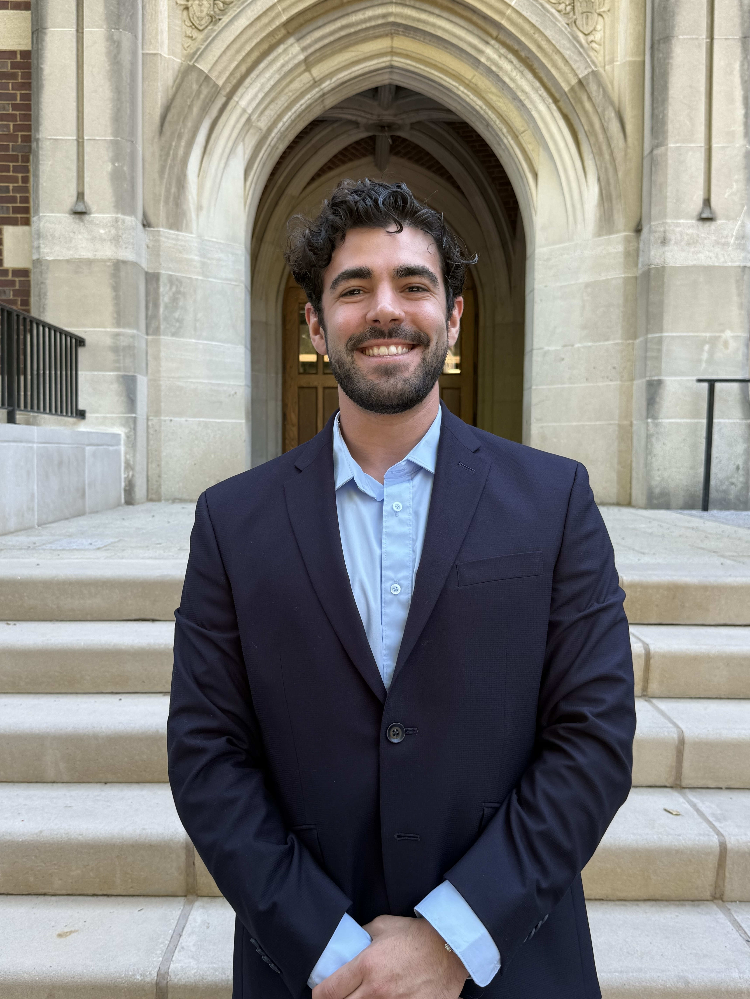

Vanderbilt University · MEDLab
Building robots that help surgeons heal. I develop minimally invasive continuum robotic systems for surgical applications — from transendoscopic suturing to fibroid removal — bridging mechanical design, kinematics, and clinical need.

Background
I'm a PhD student in Mechanical Engineering at Vanderbilt University, where I work in the Medical Engineering and Discovery Lab (MEDLab) under Dr. Robert J. Webster III. My research focuses on continuum and concentric tube robots for minimally invasive surgery — systems that can navigate the body's natural pathways to reach places traditional tools cannot.
I completed my MS and BS in Robotics Engineering at Worcester Polytechnic Institute (WPI), where I worked with Dr. Loris Fichera on accessible concentric tube robot designs and steerable laser fibers for office-based laryngeal surgery.
I'm passionate about the full arc from blue-sky research to clinical impact. My work spans robot design and fabrication, kinematic modeling, surgical workflow integration, and collaboration directly with surgeons on phantom and tissue experiments.
Projects
Developing a dual-arm handheld concentric tube robot system for Natural Orifice Transluminal Endoscopic Surgery (NOTES), enabling suturing in highly confined anatomical spaces without external incisions.
Lead Project · 2021–PresentCollaborating on automation methods for suturing and hemostasis in minimally invasive surgery. Co-authored the proposal for an ARPA-H award of up to $12M for this multi-institutional effort.
Vanderbilt MEDLab · 2024–PresentLeading a research team developing a continuum robot for resecting fibroids inside the uterus. Modeling concentric tube robot kinematics at their superelastic limit to enable high-curvature robotic arms.
Principal Investigator · 2024–PresentMS thesis work creating an accessible concentric tube robot from 3D-printed and off-the-shelf materials, enabling broader educational and research adoption without expensive custom fabrication.
WPI MS Thesis · 2020–2021Developed simulation platforms and end-effector designs to steer a laser fiber through an endoscope into the larynx for office-based treatment of pre-malignant vocal fold tumors. Awarded Best Student Paper at SPIE 2021.
WPI Capstone + Research · 2019–2021Contributing to a feasibility study for low-field MRI-guided transurethral robotic focal prostate resection, bridging imaging and robotic intervention for precision oncology.
Collaborative · 2022–PresentWatch
Scholarship
Full list on Google Scholar →
News & Activities
Background
Education
Experience
Honors & Awards